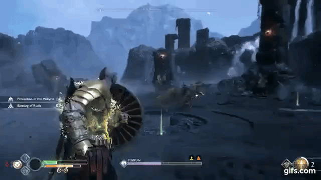
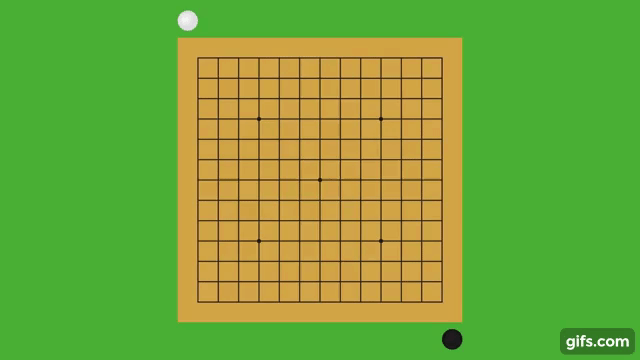
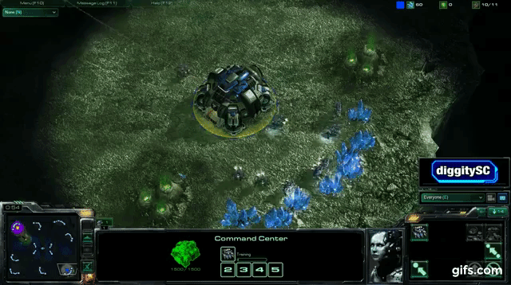

Randomness in gameplay is when certain events happen during gameplay that are unpredictable or imperceivable to the player.
Generally when we refer to randomness we refer to Overt Randomness (Dice rolls, Card draws, Random Number Generators etc)
However, the following can be considered as cases for randomness too:
- Physical Limitations for execution of skill (memory, accuracy, speed, strength, timing)

(Can me or my opponent successfully execute a hard to execute combo in Street Fighter 4)
- Unpredictable Opponent Decision Making (when the choice of attacking/defending move by the AI is perceived as random to the player)

(God of War's Valkyries have multiple attacking moves that are randomly chosen that the player has to react to)
- Complexity (Game space is too complex to make a calculated decision)

(In a game like Go where the decision space is so complex, the choice of where to put your piece becomes effectively random. Even AI programs rely on probabilistic algorithms like Monte Carlo Search since it is too expensive to predict the next move)
- Hidden Information (Player has to make decisions based on uncertain information)

(In most RTS games, the concept of Fog of War exists as a means to obscure information of the map state. This creates a state of hidden information of the opponent's actions that makes that aspect of the game feel random. More skilled players use scouting as a mechanic to reduce this.)
For the rest of the article however, when I refer to Randomness, I will refer to Overt Randomness since that is the most common form of randomness we find in gameplay in most games.
Pros and Cons of Randomness
Pros:
- Adds variety and helps make repeated playthroughs feel different and fresh.
- Makes the game space not feel solvable.
- Can make the game more approachable as it can make it such that with a lucky roll a less skilled player can beat a higher skilled player some of the time.
- Protects egos as players can always blame the random event as the reason why they lost.
- Adds exciting moments in games. Think of a time where you landed a critical hit that killed a monster in one hit.
Cons:
- Can be perceived as unfair when you are dealt a bad hand (Think of the time you played a game like Magic the Gathering but didn't draw a single land or creature that you could play)
- If the game is heavily based on luck can turn away more strategic/skill based players.
In general, I think randomness has more benefits than negatives in game design but certain genres or games where skill is supposed to trump chance a 100% of the time (For example: Most Fighting games, chess etc) you will see almost no Overt Randomness.
Categories of Randomness
Generally, overt randomness can be split up into two categories in most games:
- Pre Player Action Randomness
- Post Player Action or Simulation Randomness
Pre Player Action Randomness
This is when a random event or set of random events occur that put the game in a state which the player can then act upon.
Examples:
(In Hearthstone the deck is randomized at the start and then the top 3 cards are drawn from it)
(Into the Breach starts each map with a randomized set of spawn locations for enemies to show up making combat encounters on the same map feel different every time)
(An example of how rooms can be generated procedurally by an algorithm that uses random seeds)
In general since this gives the player a chance to respond, is usually considered the fairest form of randomness in games as the player has some agency in decision making after the consequences of the random event.
Post Player Action or Simulation Randomness
This is when a random event or set of random events occur during sections of the game where the player doesn't have agency over or during a simulation after a player action.
Examples:
(In Darkest Dungeon, certain attacks can critical hit increasing the damage done by the attack. When a crit occurs it is usually a very satisfying moment)
(In Dota 2, the hero Phantom Assassin can be upgraded to have a fairly high miss chance on physical attacks by enemies. These moments make the crowd go wild as they can change the fate of an entire match sometimes)
(This hearthstone game looked like it was over for the Hunter opponent, until his secret triggered causing the enemy that attacked him to retarget to another random character instead)
When done well this can stir moments of emotions to the player and also make games feel lighter as player's can blame their losses on RNG instead.
Some rules for this type of randomness that I find to feel good in games where it is player versus AI (For example: Action RPGs, Roguelikes etc):
Pseudo-Deterministic Randomness:
Make it so that the random event will occur within a threshold.
Example:
- If the player fails to trigger random event, the chance of doing the event goes up incrementally till eventually it has a 100% chance to trigger.
Pro Player randomness
Make the random event always be beneficial to the player
Examples:
- Enemy has a chance to miss on the player rather than player attacks missing.
- Player has a chance to crit or lifesteal but enemy does not.
Significant random events
Make the chance for the event to occur low but the payoff be significant.
Examples:
- 5% chance to lifesteal 50% damage dealt rather than 50% chance to lifesteal 5% damage dealt
- Low chance to spawn a powerful minion is better than a high chance to spawn a weaker minion (This also has the additional benefit of being able to add more polish on the random event and usually helps performance since it happens fewer times)
Customizable Randomness
Give tools for the player to mitigate or enhance randomness
Examples:
- Skill tree unlocks to increase the chance for a random event to happen (Prevent missing on enemies, Every hit after a parry does a critical hit)
- Gear customization to increase the odds for a random even to trigger (Crit Chance, Crit Damage, Miss chance)
- Stats that increase random chance percents (If you hit 30 Strength, the chance to crit goes from 10% to 50%)
Key Research References/Links:
Richard Garfield (Luck in Games) – https://www.youtube.com/watch?v=av5Hf7uOu-o
GameMaker's Toolkit (Spelunky) https://www.youtube.com/watch?v=Uqk5Zf0tw3o
https://www.gamasutra.com/blogs/KeithBurgun/20141015/227740/Randomness_and_Game_Design.php